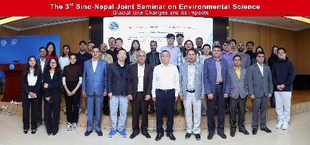

10月17日，第三届中尼环境联合研讨会在京顺利召开，研讨会由中国科学院加德满都科教中心主办，中尼两国的专家学者围绕冰湖变化及其影响主题展开对话交流。尼泊尔特里布文大学副校长Shivlal
Bhusal教授率代表团参会并访问我所。来自中国科学院青藏高原研究所、中国科学院成都山地灾害与环境研究所以及国际山地综合发展中心（ICIMOD）共50余人参加会议。会议由中国科学院加德满都科教中心执行主任汪涛研究员和尼泊尔特里布文大学水文气象系主任Deepak
Aryal院士共同主持。
我所党委书记、副所长庄绪亮研究员对Shivlal
Bhusal副校长一行到访表示热烈欢迎，并介绍了青藏高原所的基本概况、优势研究资源、为尼泊尔培养研究生情况、在尼泊尔开展的科技合作项目以及取得的重要成果，感谢特里布文大学对我所在尼开展工作的长期支持。
Shivlal
Bhusal对青藏高原所多年来开展的冰川环境研究等成果表示赞赏，并表示尼泊尔特里布文大学与中国科学院的合作历史源远流长，双方合作不断提质升级，取得了丰硕成果。此次研讨会议题与高山地区民生密切相关，希望双方学者进一步深化合作共识、优化合作机制、拓展合作领域。
会议期间，中尼专家学者就喜马拉雅地区冰湖的形成、变化、影响、风险评估以及冰湖溃决预警体系建设等内容做了精彩的学术报告。
与会专家还讨论了在喜马拉雅地区共享实时数据，共建数据中心，建立冰湖溃决预警系统，降低冰湖溃决灾害带来的影响，保障生命财产安全，共同为推动中尼两国社会经济发展和跨喜马拉雅地区命运共同体建设贡献科技力量。

与会人员合影